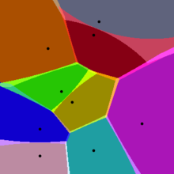
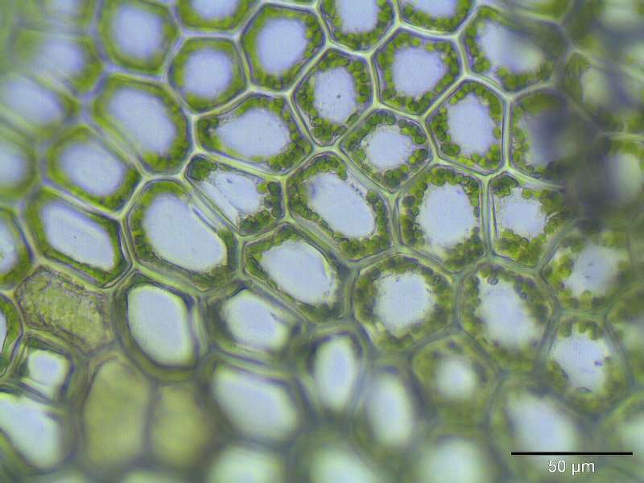
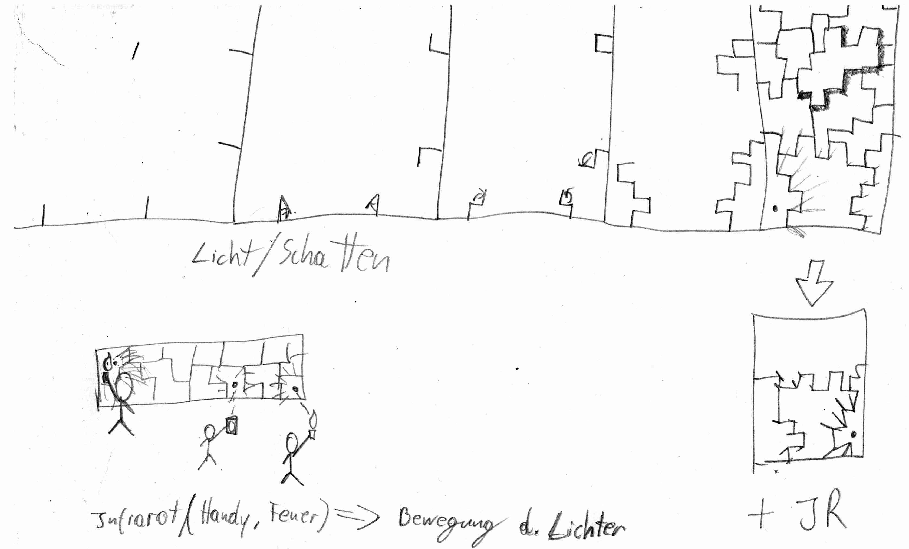
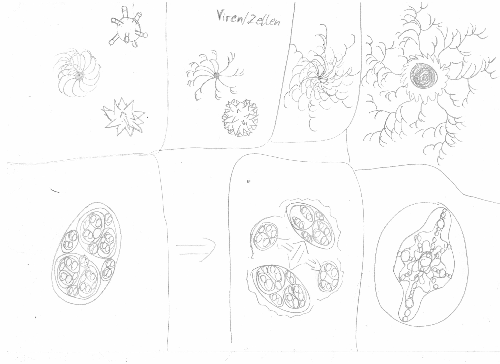
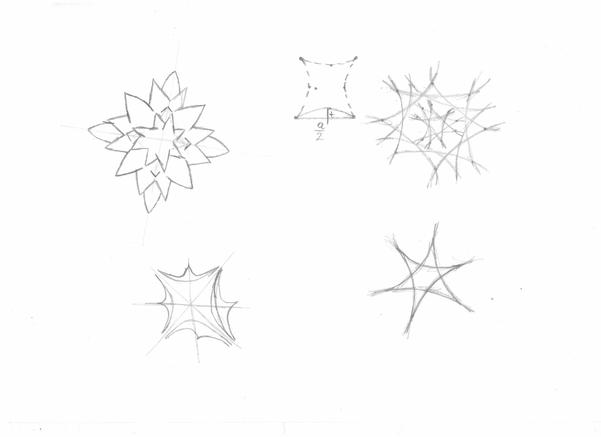
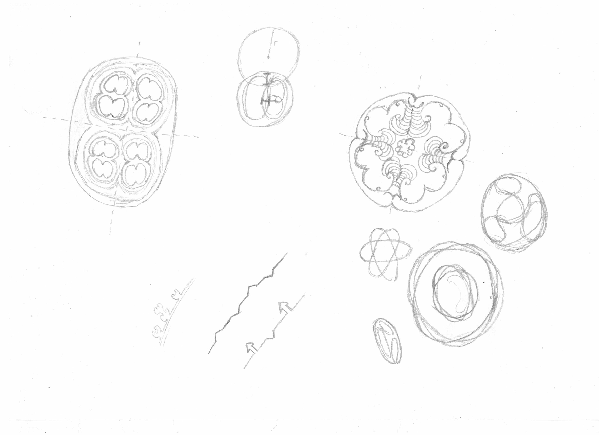
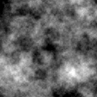
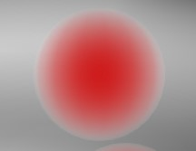
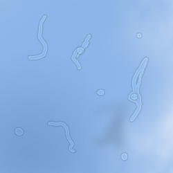
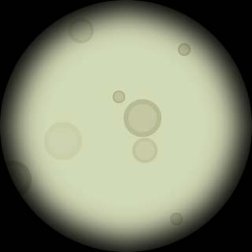

Neben der starren Darstellung von Linien der "Structured Lines" Demo wollte ich mich auch an etwas organischem versuchen. Die Linien teilen den Raum in einzelne Zellen ein. Eine andere Art dies zu tun ist das Voronoi Diagram.
In einem Voronoi Diagramm werden Flächen durch die maximale Enfernung von einzelnen Punkten in der 2D Ebene begrenzt. Werden die Grenzen hervorgehoben gleicht ein Voronoi Diagram einer Zellenstruktur. Wenn einer der Punkte dieses Diagrams bewegt wird einsteht durcht die laufende Neuberechnung des Daigrams der Eindruck, die Zelle würde sich zwischen den anderen hindurchbewegen ohne dabei den Kontakt zu verlieren.
  In gewisser Weise gleich die immer weitere Teilung von Zellen der langsamen enstehung eines Ornaments. Es bilden sich ästetische Formen, die einen begrenzten Raum einnehmen und sich bis ins Undendliche widerholen. Auch wenn ein sich so generierendes Bild auf den Betrachter beruhigend wirkt, kann es ihn nach einer gewissen Zeit langweilen. Die Monotonie sollte durch dynamische Störungen unterbrochen werden. Dazu eignet sich eine Benutzerinteraktion über Bewegung vor der Kamera, wie sie schon von vielen Medienherstellern verwendet wurde, wie z.b. beim EyeToy von Sony.
Die ersten Skizzen dreten sich um die allgemeine Form der Zellendarstellung ohne dabei an die Voronoi Bereiche zu denken. Einige dieser Entwürfe sing später für die Darstellung von schwimmenden Vordergrungobjekten in der Demo verwendet worden.
  
Ursprünglich war es angedacht neben den Zellen auch Viren oder Ähnliches zu implementieren um Spannungen zu erzäugen, jedoch habe ich die Idee verworfen der nicht-erzählerischen Eingenschafte des Ornaments zu genügen.
Die Aufteilung des Raumes ist der Skizzen zu der Linien Demo ähnlich, bis auf die Tatsache, dass die Verbindungspunkte mit Rundungen versehen wurden um Plastizität zu erzäugen.
An diesem Punkt der Enstehung der Demo wollte ich, wie zuvor bei den Linien, einen Rahmen für den Funktionsumfang ebstecken. Klar war, dass das Kamerabild abgegriffen werden musste und die Auswirkungen auf die sich im Bild befindlichen Zellen implementiert werden mussten. Weiter sollten Störungeffekte definiert werden, die sowohl automatisch, als auch manuell (durch Kamerasteuerung) den "Zellenhaufen" beeinflussen sollten. Auch hier erstellte ich eine Liste mit dem Benötigten Komponennten:
Die Demo besitzt keine eindeutige Choriographie. Die gesamten Effekte werden durch Zufall geleitet. Dadurch kann es natürlich passieren, dass manche Effekte bei einem Durchgang gar nicht vorkommen und andere viel öffter, was ich jedoch nicht als Nachteil betrachte. SO lässt sich auch mehreren Durchgängen immer noch etwas neues entdecken.
Im letzten Schritt ging es darum einen passenden "Look" für die Demo zu kreieren. Ich etschied mich für ein Aussehen, als ob man durch ein Lichtmikroskop schauen würde. Dazu teilte ich die Scene in drei Ebenen:
Die unterste Ebene beinhaltet den Hintergrund. Es sollte aussehen als ob die Zellen in einer Art flüssigkeit umherschwimmen, d.h. der Hintergrung musste sich hin und her bewegen. Außerdem ist die Ausläuchtung der Hintergrundfläche nicht homogen, was eine Wolkenbildung herbeiführen konnte.
Die Mittliere Ebene bestehl nur aus den Zellen. Dabei handelt es sich um kugelförmige Objekte, die durch die Grafikkarte von Ihnen (aktuell vom Farbrad eingestellte Farbe) nach Außen (durchsichtig) geshaded werden.
Der Vordergrund, oberste Ebene, beinhaltet sehr stark verschwommene umherschwimmende Objekte, die Floatern/Mouches volantes ähnlich sehen. Sie sollen Tiefe ins Bild bringen und die scene lebendiger erscheinen lassen. Die Formen dieser Partikel sind der ersten Skizzen entnommen und stark mweich gezeichnet.
Um den Look abzurunden wird das Bild zusätzlich mit einer kreisförmigen Vignette eingefasst, die das runde Mikroskopenrohr darstellen soll. Die Fertige Demo kann als Video von der Vorführung oder als Echtzeitdemo im Browser betrachtet werden.
